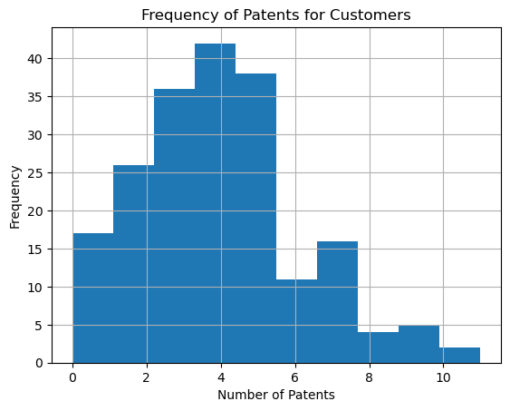
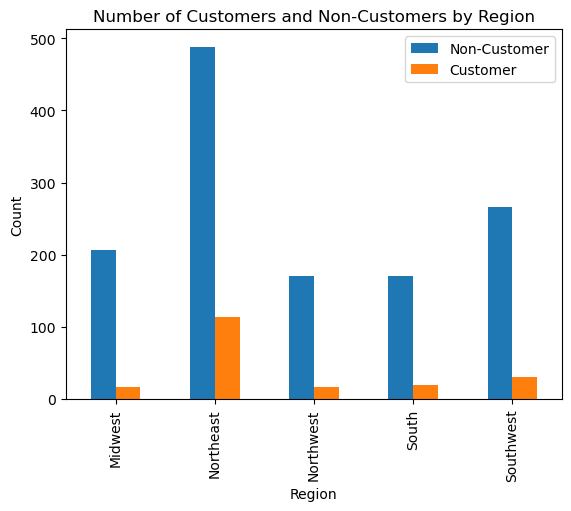
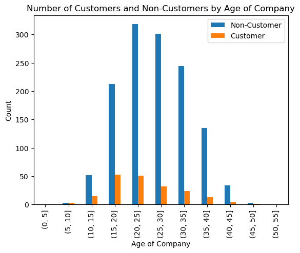
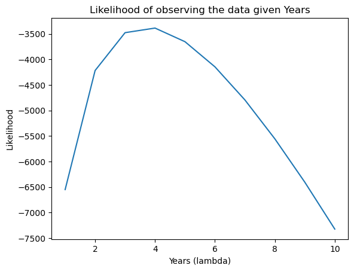

import pandas as pdimport matplotlib.pyplot as plt# Load the datadata = pd.read_csv('blueprinty.csv')data.head()
Unnamed: 0
patents
region
age
iscustomer
0
1
0
Midwest
32.5
0
1
786
3
Southwest
37.5
0
2
348
4
Northwest
27.0
1
3
927
3
Northeast
24.5
0
4
830
3
Southwest
37.0
0
# coutn the number of unique values in the column 'Unnamed: 0'data['Unnamed: 0'].nunique()
1500
data.shape
(1500, 5)
todo: Compare histograms and means of number of patents by customer status. What do you observe?
# count number of customers and non-customersdata[data['iscustomer']==1]['iscustomer'].count()
197
data[data['iscustomer']==0]['iscustomer'].count()
1303
# histogram of # of patents for Customersdata[data['iscustomer'] ==1]['patents'].hist()plt.xlabel('Number of Patents')plt.ylabel('Frequency')plt.title('Frequency of Patents for Customers')
Text(0.5, 1.0, 'Frequency of Patents for Customers')

# make histogram of # of patents for Non-Customersdata[data['iscustomer'] ==0]['patents'].hist(color='orange')plt.xlabel('Number of Patents')plt.ylabel('Frequency')plt.title('Frequency of Patents for Non-Customers')
Text(0.5, 1.0, 'Frequency of Patents for Non-Customers')
The number of patents for customers is slightly skewed right, however it has a more normal distribution than the number of patents for non-customers.
Both plots have a large drop off around 6 patents (For customers it is slightly less than 6). The number of non-customers is significantly higher than the number of customers, totaling to 1303 non-customers and 197 customers. The mean number of patents for customers was 4.09 and the mean number of patents for non-customers was 3.62. This is a difference of about 0.5 patents.
mean_patents_customers = data[data['iscustomer'] ==1]['patents'].mean()mean_patents_noncustomers = data[data['iscustomer'] ==0]['patents'].mean()print('Mean patents for customers:', round(mean_patents_customers,2))print('Mean patents for non-customers:', round(mean_patents_noncustomers,2))
Mean patents for customers: 4.09
Mean patents for non-customers: 3.62
todo: Compare regions and ages by customer status. What do you observe?
# group by region and count number of customers and non-customersregion = data.groupby('region')['iscustomer'].value_counts().unstack()# Calculate respective proportion of non-customers and customers which make up each regionregion['Prop_Non_cust'] = region[0]/(region[0].sum())region['Prop_Cust'] = region[1]/(region[1].sum())# Rename columns from 0 to Non-Customers and 1 to Customersregion.rename(columns={0:'Non-Customers', 1:'Customers'}, inplace=True)region
iscustomer
Non-Customers
Customers
Prop_Non_cust
Prop_Cust
region
Midwest
207
17
0.158864
0.086294
Northeast
488
113
0.374520
0.573604
Northwest
171
16
0.131236
0.081218
South
171
20
0.131236
0.101523
Southwest
266
31
0.204144
0.157360
# rename column 0 to non-customers, 1 to customersregion.rename(columns={0:'Non-Customers', 1:'Customers'}, inplace=True)
# create a plot of the number of customers and non-customers by region side by sidedata.groupby('region')['iscustomer'].value_counts().unstack().plot(kind='bar', stacked=False)plt.xlabel('Region')plt.ylabel('Count')plt.title('Number of Customers and Non-Customers by Region')plt.legend(['Non-Customer', 'Customer'])

The Northeast has by far the most customers and non-customers, and the number of non-customers in each region clearly outweighs the number of customers. Although ranking each respective customer and non-customer base by region comes out to be nearly the same ranking, the proportions are different.
For the customers, nearly 60% are from the NE, while only 40% of non-customers are from the NE.
# group by age with bins every 5 years and count number of customers and non-customersdata['age_bins'] = pd.cut(data['age'], bins=range(0, 60, 5))age = data.groupby('age_bins')['iscustomer'].value_counts().unstack()age['Prop_Non_cust'] = age[0]/(age[0].sum())age['Prop_Cust'] = age[1]/(age[1].sum())age.rename(columns={0:'Non-Customers', 1:'Customers'}, inplace=True)age
/tmp/ipykernel_27929/4171049143.py:5: FutureWarning: The default of observed=False is deprecated and will be changed to True in a future version of pandas. Pass observed=False to retain current behavior or observed=True to adopt the future default and silence this warning.
age = data.groupby('age_bins')['iscustomer'].value_counts().unstack()
iscustomer
Non-Customers
Customers
Prop_Non_cust
Prop_Cust
age_bins
(0, 5]
0
0
0.000000
0.000000
(5, 10]
3
3
0.002302
0.015228
(10, 15]
52
15
0.039908
0.076142
(15, 20]
213
53
0.163469
0.269036
(20, 25]
318
51
0.244052
0.258883
(25, 30]
301
32
0.231005
0.162437
(30, 35]
244
24
0.187260
0.121827
(35, 40]
135
13
0.103607
0.065990
(40, 45]
34
5
0.026094
0.025381
(45, 50]
3
1
0.002302
0.005076
(50, 55]
0
0
0.000000
0.000000
# create a plot of the number of customers and non-customers by age side by sidedata.groupby('age_bins')['iscustomer'].value_counts().unstack().plot(kind='bar', stacked=False)plt.xlabel('Age of Company')plt.ylabel('Count')plt.title('Number of Customers and Non-Customers by Age of Company')plt.legend(['Non-Customer', 'Customer'])
/tmp/ipykernel_27929/196641801.py:3: FutureWarning: The default of observed=False is deprecated and will be changed to True in a future version of pandas. Pass observed=False to retain current behavior or observed=True to adopt the future default and silence this warning.
data.groupby('age_bins')['iscustomer'].value_counts().unstack().plot(kind='bar', stacked=False)

# find mean age for customers and non-customersmean_age_customers = data[data['iscustomer'] ==1]['age'].mean()mean_age_noncustomers = data[data['iscustomer'] ==0]['age'].mean()print('Mean age for customers:', round(mean_age_customers,2))print('Mean age for non-customers:', round(mean_age_noncustomers,2))
Mean age for customers: 24.15
Mean age for non-customers: 26.69
# Calculate a 95% confidence interval for the mean age of customers and non-customersimport numpy as npstd_age_customers = data[data['iscustomer'] ==1]['age'].std()std_age_noncustomers = data[data['iscustomer'] ==0]['age'].std()n_customers = data[data['iscustomer'] ==1]['age'].count()n_noncustomers = data[data['iscustomer'] ==0]['age'].count()z =1.96ci_customers = z * (std_age_customers/np.sqrt(n_customers))ci_noncustomers = z * (std_age_noncustomers/np.sqrt(n_noncustomers))print('95% CI for mean age of customers:', round(mean_age_customers-ci_customers,2), round(mean_age_customers+ci_customers,2))print('95% CI for mean age of non-customers:', round(mean_age_noncustomers-ci_noncustomers,2), round(mean_age_noncustomers+ci_noncustomers,2))
95% CI for mean age of customers: 23.09 25.21
95% CI for mean age of non-customers: 26.3 27.08
The most customers come from companies which are between 15-20 years old, with the average company age being about 24 years. The most non-customers come from companies which are between 20-25 years old, with the average company age being about 27 years.
The distribution of company ages for customers and non-customers resembles a normal distribution, with a slight skew to the right. The largest disparity between the two distributions is at the 10-15 year mark, where the % of non-customers is 10% lower than that of customers (16%, 26%).
The confidence interval for the mean age of customers is (23.1, 25.2) and the confidence interval for the mean age of non-customers is (26.3, 27.1).
Write down mathematically the likelihood for_ \(Y \sim \text{Poisson}(\lambda)\). Note that \(f(Y|\lambda) = e^{-\lambda}\lambda^Y/Y!\).
Below is the log-likelihood function for the Poisson distribution. The likelihood function of lambda given Y is the exact same as the function of Y given lambda.
ℓ(λ∣Y)=−λ+Ylog(λ)−log(Y!)
Code the likelihood (or log-likelihood) function for the Poisson model. This is a function of lambda and Y. For example:_
def poisson_log_likelihood(lam, y):""" Parameters: - lam (float): The rate parameter (lambda) of the Poisson distribution. - y (array-like): Array of observed counts. Returns: - float: The log likelihood of observing the data given lam. """ y = np.array(y) n =len(y) # number of observations sum_y = np.sum(y) # sum of all observed counts# Calculate each part of the log likelihood# log(P(Y|lam)) = -n * lam + sum_y * log(lam) - log(y_i!)# We use np.sum(np.log(y_factorials)) to sum log of factorials log_likelihood =-n * lam + sum_y * np.log(lam) - np.sum([np.log(np.math.factorial(i)) for i in y])return log_likelihood
years =range(1,11)log_likelihood_values = []for i in years: log_likelihood_value = poisson_log_likelihood(i, data['patents']) log_likelihood_values.append(log_likelihood_value)log_likelihood_values
/tmp/ipykernel_27929/1539929848.py:17: DeprecationWarning: `np.math` is a deprecated alias for the standard library `math` module (Deprecated Numpy 1.25). Replace usages of `np.math` with `math`
log_likelihood = -n * lam + sum_y * np.log(lam) - np.sum([np.log(np.math.factorial(i)) for i in y])
_todo: Use your function to plot lambda on the horizontal axis and the likelihood (or log-likelihood) on the vertical axis for a range of lambdas (use the observed number of patents as the input for Y).
# _todo: Use your function to plot lambda on the horizontal axis and the likelihood (or log-likelihood) on the vertical axis for a range of lambdas (use the observed number of patents as the input for Y).plt.plot(years, log_likelihood_values)plt.xlabel('Years (lambda)')plt.ylabel('Likelihood')plt.title('Likelihood of observing the data given Years')plt.show()

from scipy.optimize import minimizedef neg_poisson_log_likelihood(lam, y):""" Compute the log likelihood of observing data y under a Poisson distribution with parameter lam. Parameters: - lam (float): The rate parameter (lambda) of the Poisson distribution. - y (array-like): Array of observed counts. Returns: - float: The log likelihood of observing the data given lam. """ y = np.array(y) n =len(y) # number of observations sum_y = np.sum(y) # sum of all observed counts# Calculate each part of the log likelihood# log(P(Y|lam)) = -n * lam + sum_y * log(lam) - log(y_i!)# We use np.sum(np.log(y_factorials)) to sum log of factorialsreturn-(-n * lam + sum_y * np.log(lam) - np.sum([np.log(np.math.factorial(i)) for i in y]))
/tmp/ipykernel_27929/354120658.py:21: DeprecationWarning: `np.math` is a deprecated alias for the standard library `math` module (Deprecated Numpy 1.25). Replace usages of `np.math` with `math`
return -(-n * lam + sum_y * np.log(lam) - np.sum([np.log(np.math.factorial(i)) for i in y]))
Next, we extend our simple Poisson model to a Poisson Regression Model such that \(Y_i = \text{Poisson}(\lambda_i)\) where \(\lambda_i = \exp(X_i'\beta)\). The interpretation is that the success rate of patent awards is not constant across all firms (\(\lambda\)) but rather is a function of firm characteristics \(X_i\). Specifically, we will use the covariates age, age squared, region, and whether the firm is a customer of Blueprinty.
todo: Update your likelihood or log-likelihood function with an additional argument to take in a covariate matrix X. Also change the parameter of the model from lambda to the beta vector. In this model, lambda must be a positive number, so we choose the inverse link function g() to be exp() so that\(\lambda_i = e^{X_i'\beta}\). For example:
poisson_regression_likelihood <- function(beta, Y, X){
...
}
::: {#cell-33 .cell execution_count=73}
``` {.python .cell-code}
import numpy as np
from scipy.optimize import minimize
from scipy.special import factorial
def poisson_regression_log_likelihood(beta, Y, X):
# Calculate lambda for each observation
lambda_i = np.exp(np.dot(X, beta))
# Calculate the log likelihood
log_likelihood = np.sum(Y * np.log(lambda_i) - lambda_i - np.log(factorial(Y)))
# Return the negative log likelihood
return -log_likelihood
:::
todo: Use your function along with R’s optim() or Python’s sp.optimize() to find the MLE vector and the Hessian of the Poisson model with covariates. Specifically, the first column of X should be all 1’s to enable a constant term in the model, and the subsequent columns should be age, age squared, binary variables for all but one of the regions, and the binary customer variable. Use the Hessian to find standard errors of the beta parameter estimates and present a table of coefficients and standard errors.
# convert regions column to binary columnsdata = pd.get_dummies(data, columns=['region'], drop_first=True)
# creating function to convert boolean column to binarydef convert_boolean_to_binary(data, column): data[column] = data[column].astype(int)return data# coverting region's boolean values to binarydata = convert_boolean_to_binary(data, 'region_Northeast')data = convert_boolean_to_binary(data, 'region_South')data = convert_boolean_to_binary(data, 'region_Southwest')data = convert_boolean_to_binary(data, 'region_Northwest')
data['age_squared'] = data['age']**2
n =len(data) # Number of observationsX = np.c_[np.ones(n).tolist(), data['age'], data['age_squared'], data['iscustomer'], data['region_Southwest'], data['region_Northwest'], data['region_Northeast'], data['region_South']]Y = data['patents']# Initial guess for betainitial_beta = np.zeros(X.shape[1])# Minimizationresult = minimize(poisson_regression_log_likelihood, initial_beta, args = (Y, X), method='BFGS')print("Optimal beta:", result.x)print("Success:", result.success)print("Message:", result.message)
Optimal beta: [0. 0. 0. 0. 0. 0. 0. 0.]
Success: False
Message: Desired error not necessarily achieved due to precision loss.
/tmp/ipykernel_27929/1165065463.py:8: RuntimeWarning: overflow encountered in exp
lambda_i = np.exp(np.dot(X, beta))
/opt/conda/lib/python3.11/site-packages/numpy/core/_methods.py:49: RuntimeWarning: overflow encountered in reduce
return umr_sum(a, axis, dtype, out, keepdims, initial, where)
/opt/conda/lib/python3.11/site-packages/scipy/optimize/_numdiff.py:576: RuntimeWarning: invalid value encountered in subtract
df = fun(x) - f0
/tmp/ipykernel_27929/1165065463.py:8: RuntimeWarning: overflow encountered in exp
lambda_i = np.exp(np.dot(X, beta))
/opt/conda/lib/python3.11/site-packages/numpy/core/_methods.py:49: RuntimeWarning: overflow encountered in reduce
return umr_sum(a, axis, dtype, out, keepdims, initial, where)
import numpy as npfrom scipy.optimize import minimizedef poisson_regression_log_likelihood(beta, Y, X): eta = np.dot(X, beta) lambda_i = np.exp(eta) log_likelihood = np.sum(Y * eta - lambda_i)return-log_likelihood# Load and preprocess your data as before, ensuring that features are scaledfrom sklearn.preprocessing import StandardScalerscaler = StandardScaler()# Assuming 'age' and 'age_squared' need scalingdata['age'] = scaler.fit_transform(data[['age']])data['age_squared'] = scaler.fit_transform(data[['age_squared']])# Assuming that you already converted regions into dummy variables and set up the data correctlyX = np.c_[np.ones(len(data)), data['age'], data['age_squared'], data['iscustomer'], data['region_Southwest'], data['region_Northwest'], data['region_Northeast'], data['region_South']]Y = data['patents'].values# Initial guess for betainitial_beta = np.zeros(X.shape[1])# Minimization using a more controlled approachresult = minimize(poisson_regression_log_likelihood, initial_beta, args=(Y, X), method='BFGS')print("Optimal beta:", result.x)print("Success:", result.success)print("Message:", result.message)
Optimal beta: [ 1.21543809 1.04645982 -1.14084528 0.11811438 0.05134699 -0.02009421
0.098596 0.05717198]
Success: False
Message: Desired error not necessarily achieved due to precision loss.
# _todo: Check your results using R's glm() function or Python sm.GLM() function._import statsmodels.api as sm# Fit a Poisson regression model using statsmodelspoisson_model = sm.GLM(Y, X, family=sm.families.Poisson()).fit()# Print the summary of the modelprint(poisson_model.summary())
# Calculate Hessian at the optimal betafrom scipy.linalg import invhessian_inv = result.hess_inv # Inverse Hessian is returned by BFGS# Standard errors are the square roots of the diagonal elements of the inverse Hessianstd_errors = np.sqrt(np.diag(hessian_inv))print("Standard Errors:", std_errors)
Standard Errors: [0.02272912 0.14333007 0.14451598 0.03888018 0.03676005 0.04672971
0.02526631 0.02849847]
We can conclude, based on our optimal beta’s through our regression model, that Blueprinty’s software has a positive effect on the number of patents awarded to a company. The coefficient or beta calculated for “iscustomer” is 0.11, meaning if they are a customer of the software, the humber of patents earned increases by 0.11.
We also see that p-value of “iscustomer” is 0.002, meaning there is only a 0.2% chance that the coefficient has zero affect on the number of patents given the dataset.
AirBnB is a popular platform for booking short-term rentals. In March 2017, students Annika Awad, Evan Lebo, and Anna Linden scraped of 40,000 Airbnb listings from New York City. The data include the following variables:
Note
- `id` = unique ID number for each unit
- `last_scraped` = date when information scraped
- `host_since` = date when host first listed the unit on Airbnb
- `days` = `last_scraped` - `host_since` = number of days the unit has been listed
- `room_type` = Entire home/apt., Private room, or Shared room
- `bathrooms` = number of bathrooms
- `bedrooms` = number of bedrooms
- `price` = price per night (dollars)
- `number_of_reviews` = number of reviews for the unit on Airbnb
- `review_scores_cleanliness` = a cleanliness score from reviews (1-10)
- `review_scores_location` = a "quality of location" score from reviews (1-10)
- `review_scores_value` = a "quality of value" score from reviews (1-10)
- `instant_bookable` = "t" if instantly bookable, "f" if not
todo: Assume the number of reviews is a good proxy for the number of bookings. Perform some exploratory data analysis to get a feel for the data, handle or drop observations with missing values on relevant variables, build one or more models (e.g., a poisson regression model for the number of bookings as proxied by the number of reviews), and interpret model coefficients to describe variation in the number of reviews as a function of the variables provided.
# create subset of data which only shows bedrooms which are nanairbnb[airbnb['room_type']=='Entire home/apt'].isnull().sum()# drop Entire home/apt that are null for bedrooms or bathroomsairbnb = airbnb.dropna(subset=['bedrooms', 'bathrooms'])
# fill bedrooms with 1 and bathrooms with 0 if nan and if room type is private or shared roomairbnb.loc[(airbnb['bedrooms'].isnull()) & (airbnb['room_type'] =='Private room'), 'bedrooms'] =1airbnb.loc[(airbnb['bedrooms'].isnull()) & (airbnb['room_type'] =='Shared room'), 'bedrooms'] =1airbnb.loc[(airbnb['bathrooms'].isnull()) & (airbnb['room_type'] =='Private room'), 'bathrooms'] =0airbnb.loc[(airbnb['bathrooms'].isnull()) & (airbnb['room_type'] =='Private room'), 'bathrooms'] =0
# count number of 0 value reviewsairbnb[airbnb['number_of_reviews'] ==0]['number_of_reviews'].count()
9481
# convert bedrooms NaN to 0airbnb['bedrooms'] = airbnb['bedrooms'].fillna(0)airbnb['bathrooms'] = airbnb['bathrooms'].fillna(0)# convert all columns with review_score as value of NaN to 0airbnb['review_scores_value'] = airbnb['review_scores_value'].fillna(0)airbnb['review_scores_location'] = airbnb['review_scores_location'].fillna(0)airbnb['review_scores_cleanliness'] = airbnb['review_scores_cleanliness'].fillna(0)# convert room_type to booleanairbnb = pd.get_dummies(airbnb, columns=['room_type'], drop_first=True)
for i in airbnb['instant_bookable']:if i =='t': airbnb['instant_bookable'] =1else: airbnb['instant_bookable'] =0
The average number of reviews is 15.9 for this dataset, however the standard deviation is 29.25, meaning there is a large spread in the number of reviews, with many locations having 0 reviews (Right skewed)
Most of the listings in the dataset rank very high in cleanliness, location, and value, with all having an average of above 9 out of 10.
The price of the listings is also left skewed, with the average price being $145, but the standard deviation being $211, meaning there is a large spread in the price of listings like the number of reviews. However with this spread, due to the fact that the price can’t be negative, the distribution is left skewed.
# Load and preprocess your data as before, ensuring that features are scaledfrom sklearn.preprocessing import StandardScalerscaler = StandardScaler()# Assuming 'age' and 'age_squared' need scalingdata['age'] = scaler.fit_transform(data[['age']])data['age_squared'] = scaler.fit_transform(data[['age_squared']])
# from the days column, drop all rows with a value of 0airbnb = airbnb[airbnb['days'] !=0]
import numpy as npfrom scipy.optimize import minimizefrom sklearn.preprocessing import StandardScalerscaler = StandardScaler()# Assuming 'age' and 'age_squared' need scalingairbnb['days_scaled'] = scaler.fit_transform(airbnb[['days']])airbnb['price'] = scaler.fit_transform(airbnb[['price']])airbnb['review_scores_cleanliness'] = scaler.fit_transform(airbnb[['review_scores_cleanliness']])airbnb['review_scores_location'] = scaler.fit_transform(airbnb[['review_scores_location']])airbnb['review_scores_value'] = scaler.fit_transform(airbnb[['review_scores_value']])# Assuming that you already converted regions into dummy variables and set up the data correctlyX = np.c_[np.ones(len(airbnb)), airbnb['days_scaled'], airbnb['bathrooms'], airbnb['bedrooms'], airbnb['price'], airbnb['review_scores_cleanliness'], airbnb['review_scores_location'], airbnb['review_scores_value'], airbnb['instant_bookable'], airbnb['room_type_Private room'], airbnb['room_type_Shared room']]Y = airbnb['reviews_per_year'].values# Initial guess for betainitial_beta = np.zeros(X.shape[1])# Minimization using a more controlled approachresult = minimize(poisson_regression_log_likelihood, initial_beta, args=(Y, X), method='BFGS')print("Optimal beta:", result.x)print("Success:", result.success)print("Message:", result.message)
Optimal beta: [ 0.60331738 -0.91467491 -0.01100322 0.10389168 -0.08852837 0.76816195
0.39240359 0.17957291 0.60331738 -0.00616376 -0.04999207]
Success: False
Message: Desired error not necessarily achieved due to precision loss.
# group the data based on days (binning the days) and reviews_per_year (binning reviews per year)airbnb['days_bins'] = pd.cut(airbnb['days'], bins=range(0, 400, 50))airbnb['reviews_per_year_bins'] = pd.cut(airbnb['reviews_per_year'], bins=range(0, 150, 25))days_reviews = airbnb.groupby('days_bins')['reviews_per_year_bins'].value_counts().unstack()days_reviews
/tmp/ipykernel_52532/3527047454.py:7: FutureWarning: The default of observed=False is deprecated and will be changed to True in a future version of pandas. Pass observed=False to retain current behavior or observed=True to adopt the future default and silence this warning.
days_reviews = airbnb.groupby('days_bins')['reviews_per_year_bins'].value_counts().unstack()
reviews_per_year_bins
(0, 25]
(25, 50]
(50, 75]
(75, 100]
(100, 125]
days_bins
(0, 50]
114
62
13
10
3
(50, 100]
200
71
18
4
2
(100, 150]
452
117
31
5
4
(150, 200]
456
110
51
11
4
(200, 250]
494
100
37
10
2
(250, 300]
647
113
33
4
2
(300, 350]
685
133
23
4
1
# make each column in days_reviews proportional to the sum of the number in each rowdays_reviews['sum'] = days_reviews.sum(axis=1)days_reviews = days_reviews.div(days_reviews['sum'], axis=0)days_reviews.drop(columns='sum', inplace=True)days_reviews
reviews_per_year_bins
(0, 25]
(25, 50]
(50, 75]
(75, 100]
(100, 125]
days_bins
(0, 50]
0.564356
0.306931
0.064356
0.049505
0.014851
(50, 100]
0.677966
0.240678
0.061017
0.013559
0.006780
(100, 150]
0.742200
0.192118
0.050903
0.008210
0.006568
(150, 200]
0.721519
0.174051
0.080696
0.017405
0.006329
(200, 250]
0.768274
0.155521
0.057543
0.015552
0.003110
(250, 300]
0.809762
0.141427
0.041302
0.005006
0.002503
(300, 350]
0.809693
0.157210
0.027187
0.004728
0.001182
Looking at the betas calculated from our Poisson Regression Likelihood model, the first explanatory variable analyzed was days listed. Days listed seems to have a negative affect on the number of reviews, with a beta of -0.91. This is significant considering the other betas. The explanation for this may be that people like to see brand new listings since as time goes on, the listings have more wear and tear, thus review scores start to decrease. However, the other explanation is there is an omitted variable we are missing that was not captured in this dataset.
In the days_reviews table above, it shows the proportion of reviews_per_year in comparison to each days bin. It does seem like as the number of days increases, the number of reviews per year decreases with the exception of the first bin (0-25 reviews per year).
Bathrooms also has a slightly negative affect on the number of reviews, with a beta of -0.011. This is not as significant as some of the other variables, and may be leading to omitted variable bias. However, an explanation may be that rooms are more popular than homes for the individuals in this area. If they are staying short term, they may have a bathroom outside the room.
Bedrooms do have a positive effect on the number of reviews, with a beta of 0.10. Meaning an entire house or apartment is more likely to get more reviews than a shared room. This is significant, and may be due to the fact that people are more likely to stay in a place with more bedrooms if they are traveling with a group. They also may be more likely to leave a review if traveling with a group.
Price has a negative effect on reviews per year, with a beta of -0.088. This may be explained by the income class of those staying and the increased prices in NYC. Most people try and spend the least amount of money as possible in order to have a satisfactory experience.
Review scores all have a positive effect on reviews_per_year with value having the largest affect. As stated above, most people want to spend the least amount of money for a satisfactory experience, so if a place is respectively inexpensive and has a high value rating by others, than that will attract others to stay.
Instant bookable has a significant positive effect on reviews_per_year. This aligns with the American society values. People want to be able to have control at the touch of a button. They lose interest quickly if the have to wait and want immediate feedback. Instant bookings provide that instant feedback.
Private and shared rooms have a slightly negative effect, which means that entire homes or apartments are more desirable. Although price is a concern and entire homes or apartments are more expensive, they provide more privacy and space for the guests. If the guests are traveling in groups, that makes this option more affordable, which may explain why it’s positive.